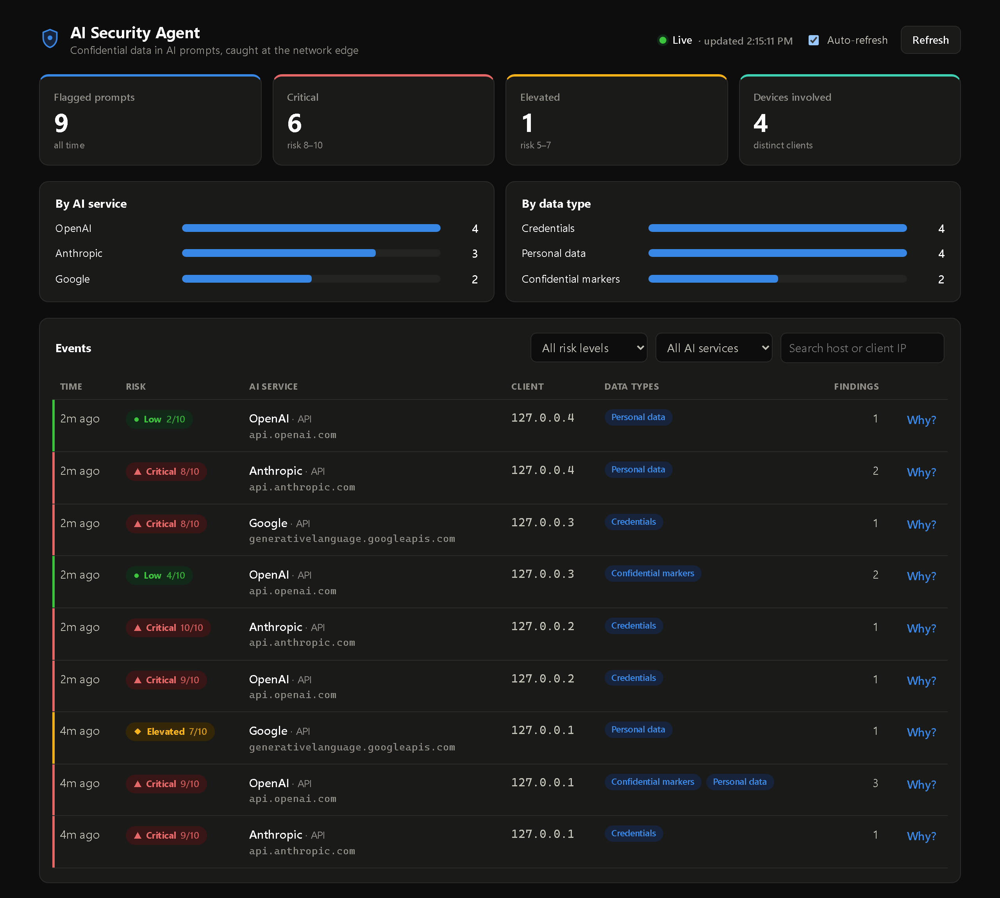
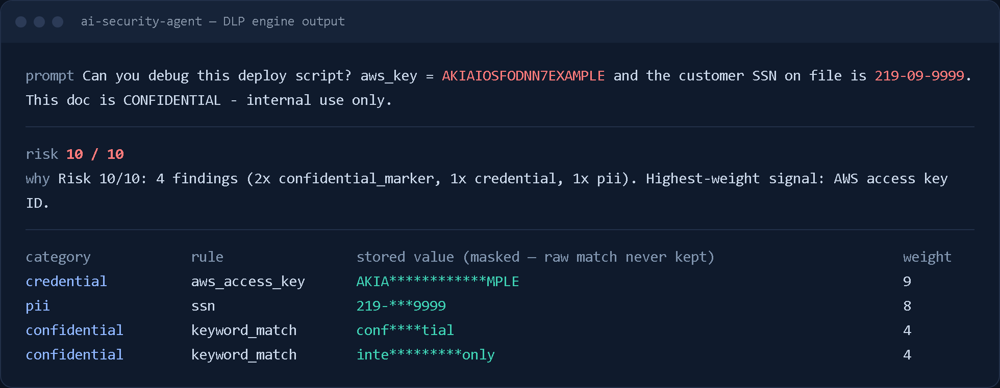
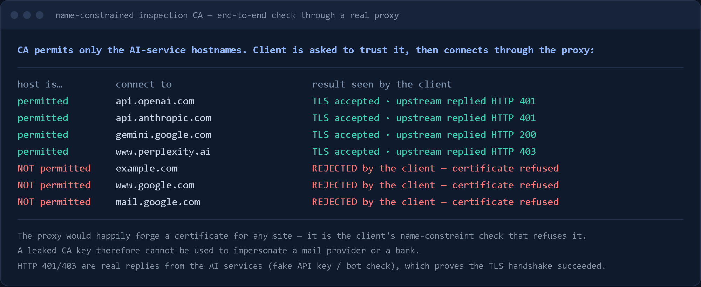

Projects / AI Security Agent
AI Security Agent
Catch confidential data before it is pasted into an AI chatbot.
Working prototype · 2026
Overview
Network-level data-loss prevention for AI usage. A TLS-inspecting proxy spots prompts headed to ChatGPT, Claude, Gemini and other AI services, scans them for secrets, credentials and personal data, and reports redacted findings to a SIEM-style admin dashboard. Includes fleet deployment tooling built around a name-constrained certificate authority.
Screenshots




The problem
Employees paste source code, API keys and customer data into AI tools every day, and browser-extension monitors miss API calls and non-browser apps entirely. A network control sees all of it, and mirrors the SSL-inspection model organizations already run on their firewalls.
How it works
A mitmproxy add-on matches each request by host and path against a registry of known AI services, then uses a per-provider extractor to pull out only the text the user typed — not system prompts, earlier turns or analytics beacons. Events are delivered on a worker thread, so a slow backend can never stall a user's request.
A DLP engine scores that text on a 1 to 10 scale. It detects AWS keys, GitHub and Slack tokens, private key blocks, JWTs, SSNs, Luhn-validated card numbers and confidential-marker keywords.
The detector is redaction-first: it never stores or returns the raw match, so the monitoring tool cannot become a new store of secrets. The admin dashboard shows only the risk summary, data types and counts. The consent model is disclosure through acceptable-use policy with a silent runtime, and it is documented in the repo.
Deployment is where the real risk lives, because inspecting TLS means clients must trust a certificate authority. The tooling limits that risk by design: a per-client CA with critical X.509 Name Constraints that can only sign for the AI-service hostnames, a PAC file generated from the same service registry the proxy uses so only monitored hosts are ever routed to it, and a fail-open fallback so a proxy outage never breaks anyone's internet.
Coverage
What has been tested against real traffic, and what hasn't.
| Service | Where | Status | Notes |
|---|---|---|---|
| OpenAI | API | Verified on live traffic | Chat Completions requests. |
| Anthropic | API | Verified on live traffic | Messages API requests. |
| Google Gemini | API | Verified on live traffic | generateContent requests. |
| Gemini | Web app | Verified on live traffic | Caught in a real browser session. The prompt sits inside JSON nested in JSON in a form field; decoded step by step. |
| Perplexity | Web app | Verified on live traffic | Caught in a real browser session. Analytics beacons that echo the prompt are deliberately ignored. |
| ChatGPT | Web app | Written, not yet verified | Cloudflare blocks automated capture. The parser follows the commonly reported format and fails safe. |
| Claude | Web app | Written, not yet verified | Needs a signed-in session to capture. Parser follows the commonly reported format. |
| Microsoft Copilot | Web app | Not supported yet | Chats over a WebSocket, which needs a message-level hook. |
| Mistral, Grok | Web app | Written, not yet verified | Generic fallback parser only. |
Highlights
- Validated on live traffic, not just unit tests: real requests to the OpenAI, Anthropic and Gemini APIs, plus real browser sessions on Gemini and Perplexity, through a local test proxy. The test CA was never installed system-wide.
- Found and fixed a real gap: the first browser test recorded zero events, because chat UIs use their own request formats — Gemini nests JSON inside JSON inside a form field. Endpoint-aware parsers now catch them.
- Perplexity echoes each prompt into analytics beacons. The registry matches on path, so the beacons are ignored and a prompt is reported exactly once.
- Name-constrained inspection CA: tested end to end through a real proxy. AI-service hosts connect; example.com, www.google.com and mail.google.com are refused by the client, so a leaked CA key cannot impersonate a mail provider or a bank.
- The CA test caught a subtle problem: mitmproxy copies the real server's certificate names, and Google's shared certificates list dozens of unrelated domains, which the constrained CA correctly rejects. Disabling upstream name copying fixed it, and a test now guards that setting.
- Deployment scripts are safe by default: the CA installer verifies the thumbprint and refuses any certificate that is not name-constrained, contains a private key or has expired; group policy is created unlinked and refuses a domain-wide link; everything has a dry-run mode and a rollback; a read-only checker reports what a machine actually receives.
- Redaction by design: findings carry the rule, category and weight — never the secret itself. The admin dashboard has tiles, breakdowns, filters, per-event rationale and live refresh in light and dark mode.
- 69 automated tests across the DLP engine, parsers, proxy add-on, backend and deployment tooling, including evaluating the generated PAC file in a JavaScript engine.
What's next
- Pilot the deployment tooling on a real domain. The Group Policy scripts have only been dry-run and parse-checked so far, because no domain was available.
- Block QUIC/HTTP3 to monitored hosts so browsers cannot bypass the proxy, set up Firefox's enterprise-roots policy, and test certificate pinning on the AI apps a client actually uses.
- Capture ChatGPT and Claude web traffic from a signed-in session. ChatGPT blocks automated browsers, and claude.ai needs a login, so those parsers are written but unverified.
- Authentication, plus a per-device drill-down and trend charts in the dashboard; Microsoft Copilot (WebSocket) inspection; multi-tenant separation.